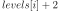
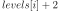
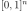
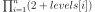

Box¶
(Source code, png, hires.png, pdf)
{kind=link}
{kind=link}
- class Box(*args)¶
Box design of experiments.
- Available constructor:
Box(levels)
Box(levels, bounds)
- Parameters
- levelssequence of int or float
Sequence specifying the number of intermediate points in each direction which regularly discretizes a pavement. In direction
 , the
points number is .
, the
points number is .- bounds
Interval The bounds of the pavement If not specified, the bounds are set to the unit pavement .
See also
Notes
Box is a stratified design of experiments enabling to create a points grid by regularly discretizing a pavement with the number of intermediate points specified in each direction. The number of points generated is .
Examples
>>> import openturns as ot >>> # direction 1 will be discretized in with 4 intermediate points >>> # and direction 2 with 2 intermediate points >>> levels = [4, 2] >>> # first component in [5,7], second in [6,9] >>> bounds = ot.Interval([5.0, 6.0], [7.0, 9.0]) >>> myGrid = ot.Box(levels, bounds) >>> mySample = myGrid.generate()
Methods
generate()Generate points according to the type of the experiment.
Get the center of the stratified experiment.
Accessor to the object's name.
getId()Accessor to the object's id.
Get the levels of the stratified experiment.
getName()Accessor to the object's name.
Accessor to the object's shadowed id.
Accessor to the object's visibility state.
hasName()Test if the object is named.
Test if the object has a distinguishable name.
setCenter(center)Set the center of the stratified experiment.
setLevels(levels)Set the levels of the stratified experiment.
setName(name)Accessor to the object's name.
setShadowedId(id)Accessor to the object's shadowed id.
setVisibility(visible)Accessor to the object's visibility state.
- __init__(*args)¶
- generate()¶
Generate points according to the type of the experiment.
- Returns
- sample
Sample The points which constitute the design of experiments. The sampling method is defined by the nature of the experiment.
- sample
Examples
>>> import openturns as ot >>> ot.RandomGenerator.SetSeed(0) >>> myExperiment = ot.Experiment(ot.MonteCarloExperiment(ot.Normal(2),5)) >>> print(myExperiment.generate()) [ X0 X1 ] 0 : [ 0.608202 -1.26617 ] 1 : [ -0.438266 1.20548 ] 2 : [ -2.18139 0.350042 ] 3 : [ -0.355007 1.43725 ] 4 : [ 0.810668 0.793156 ]
- getCenter()¶
Get the center of the stratified experiment.
- Returns
- center
Point Sequence which has different meanings according to the nature of the stratified experiment: Axial, Composite, Factorial or Box (see corresponding documentation).
- center
- getClassName()¶
Accessor to the object’s name.
- Returns
- class_namestr
The object class name (object.__class__.__name__).
- getId()¶
Accessor to the object’s id.
- Returns
- idint
Internal unique identifier.
- getLevels()¶
Get the levels of the stratified experiment.
- Returns
- levels
Point Sequence which has different meanings according to the nature of the stratified experiment: Axial, Composite, Factorial or Box (see corresponding documentation).
- levels
- getName()¶
Accessor to the object’s name.
- Returns
- namestr
The name of the object.
- getShadowedId()¶
Accessor to the object’s shadowed id.
- Returns
- idint
Internal unique identifier.
- getVisibility()¶
Accessor to the object’s visibility state.
- Returns
- visiblebool
Visibility flag.
- hasName()¶
Test if the object is named.
- Returns
- hasNamebool
True if the name is not empty.
- hasVisibleName()¶
Test if the object has a distinguishable name.
- Returns
- hasVisibleNamebool
True if the name is not empty and not the default one.
- setCenter(center)¶
Set the center of the stratified experiment.
- Parameters
- centersequence of float
Sequence which has different meanings according to the nature of the stratified experiment: Axial, Composite, Factorial or Box (see corresponding documentation).
- setLevels(levels)¶
Set the levels of the stratified experiment.
- Parameters
- levelssequence of float
Sequence which has different meanings according to the nature of the stratified experiment: Axial, Composite, Factorial or Box (see corresponding documentation).
- setName(name)¶
Accessor to the object’s name.
- Parameters
- namestr
The name of the object.
- setShadowedId(id)¶
Accessor to the object’s shadowed id.
- Parameters
- idint
Internal unique identifier.
- setVisibility(visible)¶
Accessor to the object’s visibility state.
- Parameters
- visiblebool
Visibility flag.